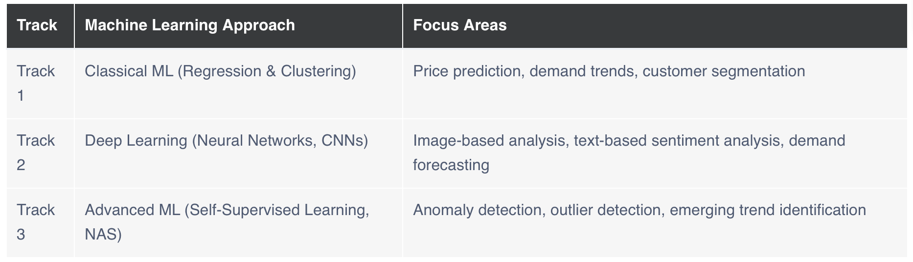

April 2025 - July 2025
1. Summary of Collaborative Discussion 1
Thank you, Andrea and Deane, for your thoughtful responses and for expanding the discussion
in such meaningful ways.
In my original post, I focused on how Industry 4.0 technologies—particularly AI, ML, IoT,
and big data analytics—are transforming the software testing and QA landscape by increasing
automation, improving accuracy, and supporting continuous integration (Antony et al., 2022a;
Alzahrani et al., 2021). From my experience in this field, these innovations are already
making a tangible difference in reducing manual workload and speeding up delivery without
compromising quality.
Andrea’s point about DevSecOps is especially relevant. The integration of security into
every stage of the development and QA pipeline is no longer optional. As Mack (2023)
describes, DevSecOps bridges development, QA, operations, and cybersecurity—making it
crucial in today’s threat-heavy environment. I agree that this offers a strong link between
Industry 4.0 and the emerging concepts in Industry 5.0, especially the emphasis on ethical
AI, privacy, and sustainable human-machine collaboration.
Deane also raised important points, particularly around the resource constraints that some
regions, like South Africa, may face when adopting these technologies. His emphasis on the
risks associated with expanded IoT usage highlights how important cybersecurity and ethical
frameworks will become as systems grow more interconnected (Metcalf, 2024; Schwab, 2016).
Overall, what stands out to me is how important it is to balance technological progress with
human values. Industry 4.0 has brought incredible advancements, but integrating the
human-centric principles of Industry 5.0—such as ethics, transparency, and privacy—will be
key to ensuring we build not just faster, but also more responsible and secure systems.
References
- Alzahrani, B. et al. (2021) ‘How ready is higher education for Quality 4.0 transformation according to the LNS research framework?’, Sustainability, 13(9), p. 5169.
- Antony, J. et al. (2022a) ‘Quality 4.0 conceptualisation and theoretical understanding: A global exploratory qualitative study’, TQM Journal, 34(5), pp. 1169–1188.
- Antony, J. et al. (2022b) ‘Quality 4.0 and its impact on organizational performance: An integrative viewpoint’, TQM Journal, 34(6), pp. 2069–2084.
- Mack, S.D. (2023) The DevSecOps Playbook: Deliver Continuous Security at Speed. 1st edn. Newark: Wiley.
- Metcalf, G.S. (2024) ‘Technological forecasting for human-centred innovation’, Technological Forecasting, 41(1).
- Schwab, K. (2016) The Fourth Industrial Revolution. Geneva: World Economic Forum.
2. Correlation and Regression Activities
Pearson's Correlation
Linear Regression
Polynomial Regression
3. Jaccard Coefficient Calculation Activity
Solution to Jaccard Coefficient Calculation
To calculate the Jaccard coefficient between pairs of individuals, we
compare their attributes
(excluding the Name column).
The formula is:
Jaccard Coefficient = (Number of Matching Attributes) / (Total Number
of Attributes Compared)
1. Pair: Jack and Mary
| Attribute | Jack | Mary | Match |
|---|---|---|---|
| Gender | M | F | No |
| Fever | Y | Y | Yes |
| Cough | N | N | Yes |
| Test-1 | P | P | Yes |
| Test-2 | N | A | No |
| Test-3 | N | P | No |
| Test-4 | A | N | No |
Matching attributes: 3
Total attributes: 7
Jaccard(Jack, Mary) = 3 / 7 = 0.429
2. Pair: Jack and Jim
| Attribute | Jack | Jim | Match |
|---|---|---|---|
| Gender | M | M | Yes |
| Fever | Y | Y | Yes |
| Cough | N | P | No |
| Test-1 | P | N | No |
| Test-2 | N | N | Yes |
| Test-3 | N | N | Yes |
| Test-4 | A | A | Yes |
Matching attributes: 5
Total attributes: 7
Jaccard(Jack, Jim) = 5 / 7 = 0.714
3. Pair: Jim and Mary
| Attribute | Jim | Mary | Match |
|---|---|---|---|
| Gender | M | F | No |
| Fever | Y | Y | Yes |
| Cough | P | N | No |
| Test-1 | N | P | No |
| Test-2 | N | A | No |
| Test-3 | N | P | No |
| Test-4 | A | N | No |
Matching attributes: 1
Total attributes: 7
Jaccard(Jim, Mary) = 1 / 7 = 0.143
Final Summary
- Jaccard(Jack, Mary) = 0.429
- Jaccard(Jack, Jim) = 0.714
- Jaccard(Jim, Mary) = 0.143
Solution to Jaccard Coefficient Calculation using Python
4. Perceptron Activities
Exercise 1: Simple Perceptron
Exercise 2: Perceptron and Operator
Exercise 3: Multi-Layer Perceptron
5. Gradient Cost Function
Read the Mayo, 2017 article and then run the tutorial: gradient_descent_cost_function.ipynb . Change the iteration number and learning_rate and observe how cost decreases.
Solution
The notebook contains a simple implementation of gradient descent for linear regression.
Here’s a breakdown of how changing the iterations and learning_rate parameters affects the
cost decrease:
1. Iterations
- Higher iterations allow more updates to the model parameters (m_curr, b_curr).
- This typically leads to a lower cost, assuming the learning rate is reasonable.
- If iterations are too low, the algorithm may stop before reaching minimum cost.
- Iterations = 10: Likely not enough to fully converge.
- Iterations = 500: Gives the algorithm time to converge more completely.
- Controls how big a step we take in each iteration toward minimizing cost.
- A small learning rate (e.g., 0.001) may converge slowly, requiring many iterations.
- A large learning rate (e.g., 1.0) may overshoot the minimum, possibly causing divergence.
- A moderate learning rate (e.g., 0.01 to 0.1) often yields a balance between speed and stability.
| Parameter | Effect on Cost Decrease |
|---|---|
| More Iterations | Lower cost (more chances to update) |
| Higher Learning Rate | Faster decrease if not too high |
| Too High LR | May cause cost to oscillate or diverge |
| Too Low LR | Very slow cost decrease |
6. CNN Model Activity
Read the Wall (2019) article and
record your thoughts on the ethical and social implications
of this CNN technology.
Run this CNN model - Convolutional
Neural Networks (CNN) - Object Recognition.ipynb - and
review different sections of the algorithm. Change the input image for prediction by
changing the value of this variable - plt.imshow(x_test[16] - from 16 to value of your
choice (1-15) and see whether the model predicts correctly.
Solution 1/2
I find the use of CNN-based facial recognition technology deeply concerning, especially when
looking at its ethical and social implications. The fact that these systems have much higher
error rates for people with darker skin, particularly women, shows that they’re far from
neutral or fair. In some cases, like in the UK, trials by the police led to about four false
matches for every correct one (BBC News, 2019). That’s not just a technical flaw — it means
real people are being wrongly targeted, questioned, and possibly even criminalised.
What worries me even more is the lack of transparency. These systems are often black boxes,
and when someone is misidentified, there’s usually no clear way to challenge or understand
the decision. Meanwhile, companies like Amazon are still pushing these tools to law
enforcement, despite internal and external concerns (BBC News, 2019). If this continues
unchecked, we risk normalising surveillance and discrimination under the guise of security
or convenience.
Until these tools are thoroughly tested for bias and there are strict rules around their
use, I don’t think they should be deployed in high-stakes areas like policing or the
military. The risks are just too great without proper oversight.
References
- BBC News (2019) ‘Biased and wrong? Facial recognition tech in the dock’, 8 July. Available at: https://www.bbc.com/news/business-48842750 (Accessed: 5 June 2025).
Solution 2/2
7. Summary of Collaborative Discussion 2
Thank you, Koulthoum and Andrea, for your engaging and thought-provoking responses. It’s
clear that the discussion around AI writing tools, particularly GPT-3, goes beyond technical
capability—it touches on ethics, education, creativity, and trust.
In my original post, I aimed to explore the benefits of GPT-3 in handling administrative
tasks and its challenges in more nuanced areas like creative writing and academic work. As I
mentioned, models like GPT-3 can be efficient and productive tools, but they lack true
understanding and often risk spreading misinformation or bias (Bender et al., 2021;
Weidinger et al., 2021).
Koulthoum’s response strengthened this view by offering practical steps to mitigate misuse.
Her suggestions on AI literacy workshops and clearly defined institutional usage policies
are especially relevant. I agree that teaching users how these systems work—what they can
and cannot do—would go a long way in preventing misuse, especially in educational contexts.
Andrea added an important dimension regarding the concerns from professional writers and
artists. The ethical issues related to data sourcing and ownership, as raised by Higgs and
Stornaiuolo (2024), reflect broader anxieties about originality and consent in the age of
generative AI. Her point reaffirms the need for human oversight when it comes to creative
and sensitive content.
While AI writers like GPT-3 offer many benefits, their use must be grounded in transparency,
ethical responsibility, and thoughtful regulation. They can assist us—but they should not
replace the human judgment, creativity, and critical thinking that define truly meaningful
communication.
References
- Bender, E.M. et al. (2021) ‘On the Dangers of Stochastic Parrots: Can Language Models Be Too Big?’, ACM Conference on Fairness, Accountability, and Transparency, pp. 610–623.
- Higgs, J.M. and Stornaiuolo, A. (2024) ‘Being Human in the Age of Generative AI’, Reading Research Quarterly, 59(4), pp. 632–650.
- Hutson, M. (2021) ‘Robo-writers: the rise and risks of language-generating AI’, Nature.
- Weidinger, L. et al. (2021) ‘Ethical and social risks of harm from Language Models’.
- Zhou, K., Prabhumoye, S. and Neubig, G. (2020) ‘Exploring Ethical and Social Implications of Language Models’.
8. Model Performance Measurement
Run the model_Performance_Measurement.ipnyb file and change different parameters and observe its impact on AUC and R2 error.
Solution
The notebook has executed successfully. Here's a brief summary of the key output values
observed:
Model Performance Metrics:
- Confusion Matrix (tuple format): (0, 2, 1, 1)
- F1 Scores:
- Macro F1: 0.267
- Micro F1: 0.333
- Weighted F1: 0.267
- F1 (no average): [0.8, 0.0, 0.0] and [0.667, 1.0, 0.667] (may be from two different models or steps)
- AUC: 0.5
- R² Score: 0.222
- Poor AUC (0.5 suggests random prediction)
- Low R² (very limited predictive power)
- Imbalanced or misclassified outputs (based on 0 F1 scores)
9. Development Team Project Report
Assignment Brief: Airbnb Business Analysis Using a Data Science Approach
Since 2008, guests and hosts have used Airbnb to expand on travelling possibilities and
present more unique, personalised ways of experiencing the world. The Airbnb dataset
(AB_NYC_2019.csv) along
with its description can be accessed through Kaggle.
This dataset
describes the listing activity and metrics in NYC, NY for 2019, including host information,
geographical availability, and key metrics to support predictions and insights.
This assignment is designed to assess your ability to apply machine learning approaches to
analyse Airbnb business trends. Each team will be assigned one of three machine learning
tracks, ensuring diverse perspectives in data exploration and decision-making.
Each group will conduct an independent analysis based on their assigned approach and then
contribute to a comparative discussion on the effectiveness of each method.

Link to solution in GitHub:
In this link, you will find the solution to the Development Team Project Report. The solution includes the final report itself. You will also find the team contract and a gantt chart to give an indication on how we worked and collaborated throughout the project. An finally, you will find the feedback we received from the tutor on our report.
Phone
(000) 000-0000 x12387Address
1234 Somewhere Road #5432Nashville, TN 00000
United States of America